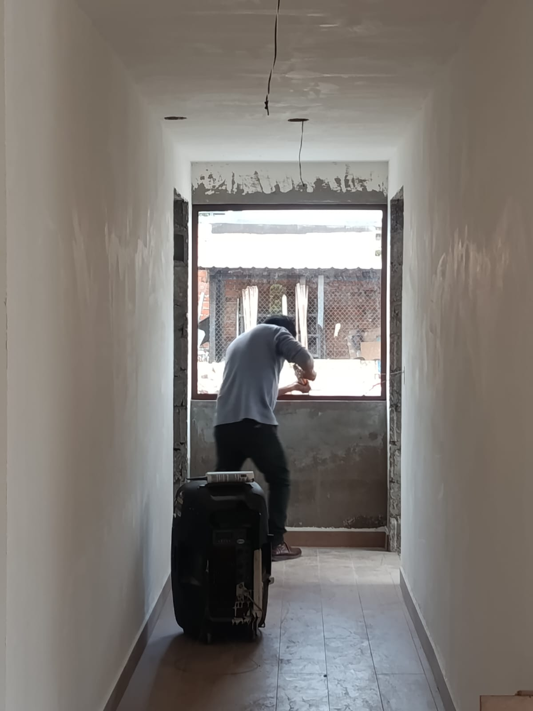

Nosotros
Un equipo local para trabajos que deben quedar bien
Conoce el enfoque de trabajo de CRIDALVID: atención cercana, medidas claras y soluciones de aluminio y vidrio pensadas para cada espacio.
CRIDALVID
Fabricación, comercialización e instalación
CRIDALVID se especializa en soluciones de aluminio, vidrio y acero inoxidable para viviendas, locales y proyectos. Trabajamos desde el local de Sangolquí, en el Valle de los Chillos, con atención directa, revisión de medidas y coordinación por WhatsApp.
El compromiso central es trabajar con medidas claras, asesoramiento cercano y acabados adecuados para cada espacio.

01
Fabricación a medida
02
Atención personalizada
03
Materiales seleccionados según el uso
04
Instalación profesional
05
Acabados precisos
06
Comunicacion clara